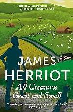
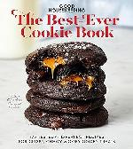
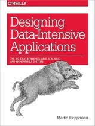
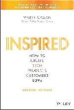
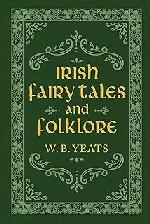
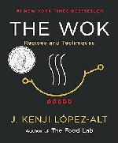

All books are available on Amazon. The images and text description were obtained from the Amazon web site.
You can track your book collection using this Book Collection Excel file

Buy at Amazon
Author:James Herriot
Description:Fresh out of Glasgow Veterinary College, to the young James Herriot 1930s Yorkshire seems to offers an idyllic pocket of rural life in a rapidly changing world. But from his erratic new colleagues, brothers Siegfried and Tristan Farnon, to incomprehensible farmers, herds of semi-feral cattle, a pig called Nugent and an overweight Pekingese called Tricki Woo, James find he is on a learning curve as steep as the hills around him. And when he meets Helen, the beautiful daughter of a local farmer, all the training and experience in the world can't help him Since they were first published, James Herriot's memoirs have sold millions of copies and entranced generations of animal lovers. Charming, funny and touching, All Creatures Great and Small is a heart-warming story of determination, love and companionship from one of Britain's best-loved authors.
Back to TopBuy at Amazon
Author:James Clear
Description:No matter your goals, Atomic Habits offers a proven framework for improving--every day. James Clear, one of the world's leading experts on habit formation, reveals practical strategies that will teach you exactly how to form good habits, break bad ones, and master the tiny behaviors that lead to remarkable results. If you're having trouble changing your habits, the problem isn't you. The problem is your system. Bad habits repeat themselves again and again not because you don't want to change, but because you have the wrong system for change. You do not rise to the level of your goals. You fall to the level of your systems. Here, you'll get a proven system that can take you to new heights.
Back to Top
Buy at Amazon
Author:Good Housekeeping
Description:Everyone loves a cookie! Whether you go right to the chocolate or are more of a buttery shortbread fan, there's a special cookie here just for you. The Good Housekeeping Test Kitchen presents their best-ever, tested-‘til-perfect recipes so you can find your soulmate in sweetness. Plus, a chapter devoted to holiday cookies will become your favorite for celebrations all year round.
Back to TopBuy at Amazon
Author:William Shakespeare
Description:Romeo and Juliet, A Midsummer Night’s Dream, King Lear, Hamlet, and Macbeth—the works of William Shakespeare still resonate in our imaginations four centuries after they were written. The timeless characters and themes of the Bard’s plays fascinate us with their joys, struggles, and triumphs, and now they are available in a special volume for Shakespeare fans everywhere. This Canterbury Classics edition of William Shakespeare’s works includes all of his poems and plays in an elegant, leather-bound, keepsake edition. Whether for a Shakespeare devotee or someone just discovering him, this is the perfect place to experience the drama of Shakespeare’s words. A scholarly introduction provides additional context and insight into the poems and plays. Specially designed end papers, a ribbon bookmark, and other enhancements complete the package and make this the perfect gift for any lover of literature—a book to read and treasure!
Back to Top
Buy at Amazon
Author:Martin Kleppmann
Description:Data is at the center of many challenges in system design today. Difficult issues need to be figured out, such as scalability, consistency, reliability, efficiency, and maintainability. In addition, we have an overwhelming variety of tools, including relational databases, NoSQL datastores, stream or batch processors, and message brokers. What are the right choices for your application? How do you make sense of all these buzzwords?
Back to TopBuy at Amazon
Author:J.K. Rowling
Description:Harry Potter has never even heard of Hogwarts when the letters start dropping on the doormat at number four, Privet Drive. Addressed in green ink on yellowish parchment with a purple seal, they are swiftly confiscated by his grisly aunt and uncle. Then, on Harry's eleventh birthday, a great beetle-eyed giant of a man called Rubeus Hagrid bursts in with some astonishing news: Harry Potter is a wizard, and he has a place at Hogwarts School of Witchcraft and Wizardry. An incredible adventure is about to begin! Having now become classics of our time, the Harry Potter ebooks never fail to bring comfort and escapism to readers of all ages. With its message of hope, belonging and the enduring power of truth and love, the story of the Boy Who Lived continues to delight generations of new readers.
Back to Top
Buy at Amazon
Author:Marty Cagan
Description:How do today’s most successful tech companies―Amazon, Google, Facebook, Netflix, Tesla―design, develop, and deploy the products that have earned the love of literally billions of people around the world? Perhaps surprisingly, they do it very differently than most tech companies. In INSPIRED, technology product management thought leader Marty Cagan provides readers with a master class in how to structure and staff a vibrant and successful product organization, and how to discover and deliver technology products that your customers will love―and that will work for your business.
Back to Top
Buy at Amazon
Author:W. B. Yeats
Description:Originally published as two separate volumes in 1800s, this premier collection of Irish stories edited and compiled W. B. Yeats is the perfect gift for any lover of Irish literature and folklore. The lyrical prose and rich cultural heritage of each tale will captivate and enchant readers of all ages and keep them entertained for hours on end.
Back to TopBuy at Amazon
Author:Louise Penny
Description:The discovery of a dead body in the woods on Thanksgiving Weekend brings Chief Inspector Armand Gamache and his colleagues from the Surete du Quebec to a small village in the Eastern Townships. Gamache cannot understand why anyone would want to deliberately kill well-loved artist Jane Neal, especially any of the residents of Three Pines - a place so free from crime it doesn't even have its own police force. But Gamache knows that evil is lurking somewhere behind the white picket fences and that, if he watches closely enough, Three Pines will start to give up its dark secrets...
Back to Top
Buy at Amazon
Author:J. Kenji López-Alt
Description:J. Kenji López-Alt’s debut cookbook, The Food Lab, revolutionized home cooking, selling more than half a million copies with its science-based approach to everyday foods. And for fast, fresh cooking for his family, there’s one pan López-Alt reaches for more than any other: the wok. Whether stir-frying, deep frying, steaming, simmering, or braising, the wok is the most versatile pan in the kitchen. Once you master the basics—the mechanics of a stir-fry, and how to get smoky wok hei at home—you’re ready to cook home-style and restaurant-style dishes from across Asia and the United States, including Kung Pao Chicken, Pad Thai, and San Francisco–Style Garlic Noodles. López-Alt also breaks down the science behind beloved Beef Chow Fun, fried rice, dumplings, tempura vegetables or seafood, and dashi-simmered dishes.
Back to Top